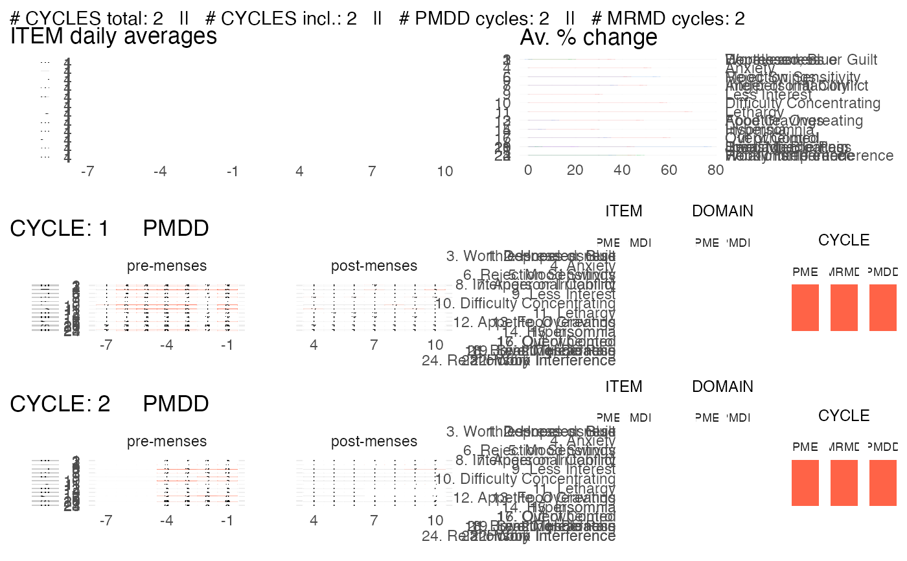

plot_subject_data_and_diagnosis.RdBy default, this function saves the visualization in a pdf. The pdf heigth scales with the number of cycles reported for the subject.
plot_subject_data_and_diagnosis( data = data.frame(), save_as_pdf = TRUE, pdf_path = "", pdf_name = "", color_max_score = "tomato", color_summary = c("complementary", "rainbow") )
| data | a data.frame that contains the symptoms reported by ONE subject.
The data must be in a long format and have the following columns: |
|---|---|
| save_as_pdf | logical.
If |
| pdf_path | string. Specifies the path to the folder in which the pdf should be saved. By default, the path is an empty string so the pdf is be saved in the current working directory. |
| pdf_name | string. Specifies the name of the pdf.
By default, the name of the pdf is |
| color_max_score | string specifying the color of a score of 6 (the maximal score) reported by a subject. Any standard color format specification is accepted, i.e. one of the R built-in color names (e.g. "tomato" (default); type |
| color_summary | string. Either |
a ggplot object if save_as_pdf = FALSE. The same object is returned invisibly by default (save_as_pdf = TRUE).
library(magrittr) library(dplyr) data(PMDD_data) input = PMDD_data %>% filter(SUBJECT == 2) %>% as_cpass_data()#> Number of SUBJECTS: 1 #> Total number of CYCLES: 2p = plot_subject_data_and_diagnosis(data = input)#> Subject summary saved in ' /Users/laurasymul/Documents/Work/Ladies & Gentlemen/Packages/cpass/docs/reference/CPASS_SUBJECT_2.pdf 'p